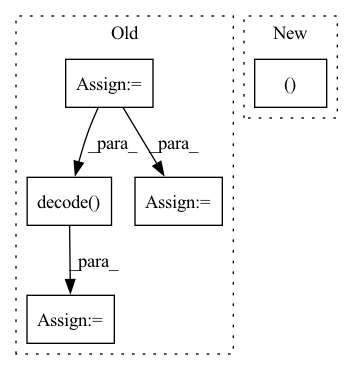

Pattern ID :10000
Before Change
predictions = predictions[section_frame_index][start_index:end_index]
prev_word_id = 0
word = TokenizedWord()
word.id2label = self.config.id2label
all_words = []
for i, word_id in enumerate(frame_word_ids):
if word_id is not None:
if word_id != prev_word_id:
word.decoded = self.tokeniser.decode( word.token_ids)
// new word
all_words.append(word)
word = TokenizedWord()
word.id2label = self.config.id2label
word.token_ids.append(frame_input_ids[i])
word.word_offsets.append(frame_offsets[i])
word.word_confidences.append(predictions[i])
word.tokens.append(frame_tokens[i])
prev_word_id = word_id
word.decoded = self.tokeniser.decode(word.token_ids)
all_words.append(word)
logger.debug(After Change
)
)
_, offset_end = frame_offsets[i]
prev_word_id = word_id
frame_word_ids_excluding_nones = set(frame_word_ids)In pattern: SUPERPATTERN
Frequency: 3
Non-data size: 5
Instances Fragment ID: 35682656
Project Name: astrazeneca/kazu
Commit Name: d2644d07218f2a87a9216442bf553d80a6737ee3
Time: 2022-11-30
Author: richard.jackson4@astrazeneca.com
File Name: kazu/steps/ner/hf_token_classification.py
M Class Name: TransformersModelForTokenClassificationNerStep
N Class Name: TransformersModelForTokenClassificationNerStep
M Method Name: frame_to_tok_word(6)
N Method Name: frame_to_tok_word(6)
M Parent Class: BaseStep
N Parent Class: BaseStep
M File Name: kazu/steps/ner/hf_token_classification.py
N File Name: kazu/steps/ner/hf_token_classification.py
M Start Line: 127
M End Line: 154
N Start Line: 130
N End Line: 178
Before Change
pl_module.eval()
logits = pl_module(text, x)
img_logits = logits[:, -pl_module.image_seq_len:].long()
img_seq = torch.argmax(img_logits, dim = -1)
img_seq -= pl_module.num_text_tokens
x_rec = pl_module.vae.decode( img_seq, feed_seq=True)
x_grid = torchvision.utils.make_grid(After Change
sample_text = text[:1]
token_list = sample_text.masked_select(sample_text != 0).tolist()
decoded_text = self.tokenizer.decode(token_list)
x, _ = batch
x = x[:1]
x_rec = outputs["xrec"][:1]
""" Fragment ID: 35682661
Project Name: tgisaturday/dalle-lightning
Commit Name: 9c1458557eb1d1a37d11b52079ef40d614175f86
Time: 2021-07-29
Author: jamesk1228@gmail.com
File Name: pl_dalle/callbacks.py
M Class Name: DalleSimpleImageSampler
N Class Name: DalleSimpleImageSampler
M Method Name: on_validation_batch_end(7)
N Method Name: on_validation_batch_end(7)
M Parent Class: Callback
N Parent Class: Callback
M File Name: pl_dalle/callbacks.py
N File Name: pl_dalle/callbacks.py
M Start Line: 441
M End Line: 452
N Start Line: 445
N End Line: 447
Before Change
with torch.no_grad():
pl_module.eval()
logits = pl_module(text, x)
img_logits = logits[:, -pl_module.image_seq_len:].long()
img_seq = torch.argmax(img_logits, dim = -1)
img_seq -= pl_module.num_text_tokens
x_rec = pl_module.vae.decode( img_seq, feed_seq=True)
pl_module.train()
After Change
sample_text = text[:1]
token_list = sample_text.masked_select(sample_text != 0).tolist()
decoded_text = self.tokenizer.decode(token_list)
x, _ = batch
x = x[:1]
x_rec = outputs["xrec"][:1]
""" Fragment ID: 35682670
Project Name: tgisaturday/dalle-lightning
Commit Name: 9c1458557eb1d1a37d11b52079ef40d614175f86
Time: 2021-07-29
Author: jamesk1228@gmail.com
File Name: pl_dalle/callbacks.py
M Class Name: DalleSimpleImageSampler
N Class Name: DalleSimpleImageSampler
M Method Name: on_train_batch_end(7)
N Method Name: on_train_batch_end(7)
M Parent Class: Callback
N Parent Class: Callback
M File Name: pl_dalle/callbacks.py
N File Name: pl_dalle/callbacks.py
M Start Line: 385
M End Line: 398
N Start Line: 385
N End Line: 387